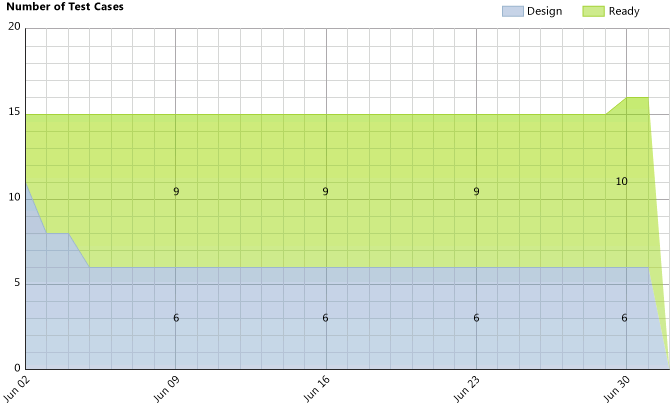
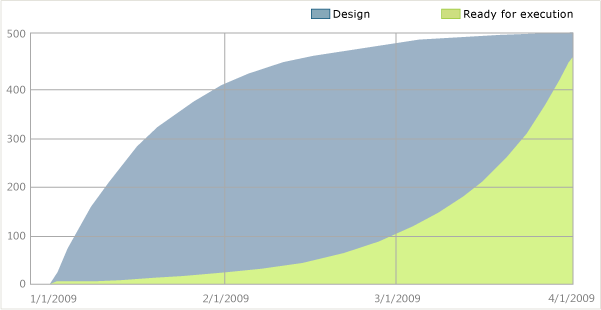
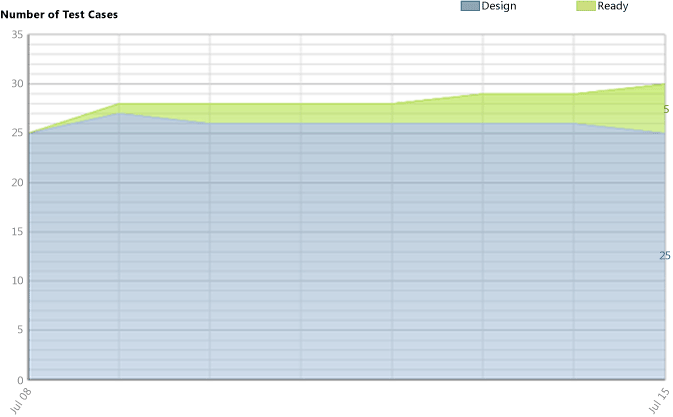
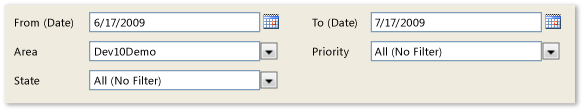

After the team starts to define test cases, you can use the Test Case Readiness report to determine how many test cases have been defined and are ready to run.
|
|
|---|
|
The Test Case Readiness report is useful only if your team is testing your application by using Test Runner and Microsoft Test Manager. For more information about how to define and use test cases, see Creating and Managing Tests. |
For information about how to access, refresh, or manage reports, see Reports (GovDev).
|
|
|---|
|
This report requires that the team project collection that contains your team project
was provisioned with SQL Server Reporting Services. This report is not available
if
|
|
In this topic |
You can use this report to answer the following questions :
|
Required Permissions
To view the report, you must be assigned or belong to a group that has been assigned the Browser role in Reporting Services. For more information, see Add Users to Team Projects or Managing Permissions.
 Data
in the Report
Data
in the Report
The Test Case Readiness report provides an area graph that shows how many test cases are in the Design or Ready state over the time period that you specify. By reviewing this data, you can easily determine how quickly the team is designing test cases and making them ready for testing. When you create a test case, it is automatically set to the design state. After the team has reviewed and approved the test case, then a team member should change its state to Ready, which indicates that the test case is ready to be run.
The following illustration shows an example of a Test Case Readiness report.
The data that appears in the report is derived from the data warehouse. The report summarizes the data that was captured for each test case during the time interval that you specified, based on the area path and other filters that you specified.
You can filter the report in the following ways:
-
Change the start and end dates for the report.
-
Filter the test cases that are counted in the report by specifying area paths, priority, and state.
For more information, see Filtering the Reportlater in this topic.
Required Activities for Tracking Test Cases
For the Test Case Readiness report to be useful and accurate, the team must perform the following activities:
-
Define test cases, and specify the Iteration and Area paths for each test case.
-
Update the state of each test case as it progresses from Design to Ready to Closed.
Interpreting
the Report
The Test Case Readiness report displays the number of all test cases, grouped by state.
Questions Answered by the Report
You can review the report to determine the team's progress within an iteration or over time. For example, you can answer these questions:
-
How many test cases are ready to be run?
-
How many test cases must the team still write and review?
-
When will all the test cases be ready to run?
-
Will all the test cases be ready to run by the end of the iteration?
Healthy Version of Report
A healthy Test Case Readiness report will show a steady progress in test cases being designed and moving to the ready state, as the following illustration shows.
Unhealthy Version of Report
The following illustration shows an unhealthy version of the Test Case Readiness report, in which the states do not change for several weeks at a time.
An unhealthy Test Case Readiness report shows one or more of the following indicators:
-
No test cases are ready to be run.
When all test cases remain in a design state for a long time, some issue is blocking progress. You might want to investigate the cause of the blockage.
-
The number of test cases does not appear sufficient.
The number of test cases that are defined for a project should be equal to or larger than the number of Use Cases that the team is implementing.
Filtering
the Report
You can filter the Test Case Readiness report to show only those test cases that are defined for the product areas, states, and priorities that you specify. The following illustration shows the available filters:
To change the time interval of the report
-
In Iteration Start (Date) or Iteration End (Date), click the calendar icon, and then click the appropriate date.
-
Click View Report.
To filter the test cases that are counted in the report
-
Perform one or both of the following actions:
-
In the Area list, select the check box of each product area to include.
-
In the State and Priority lists, select the check box of each state and priority to include.
-
-
Click View Report.